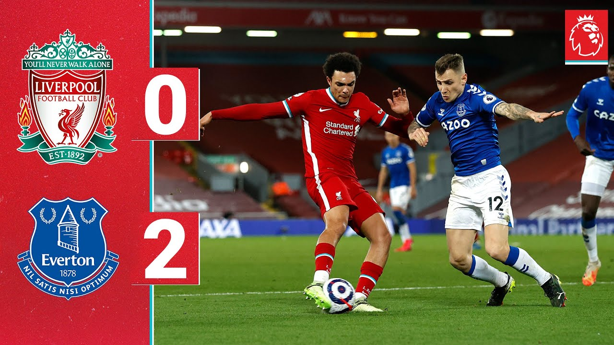

Premier League

Los Reds consiguen en Anfield una victoria clave en la lucha por el título.
Robertson y Origi marcan los goles del Liverpool en la trabajada victoria ante el Everton, por la Jornada 34 de la Premier League. Los Reds necesitaban un triunfo en el derbi ante los 'Toffees' para no perder de vista a un Manchester City que había ganado el sábado y se había escapado a cuatro puntos en lo más alto de la clasificación. Ahora, los de Klopp vuelven a estar a un punto del líder, mientras que el Everton continúa en puestos de descenso.
Tottenham venció 2-0 a Brentford por la jornada 14 de la Premier League, este jueves 2 de diciembre en el Tottenham Hotspur Stadium. Los Spurs consiguieron su segunda victoria consecutiva y llegaron al sexto lugar de la tabla de posiciones, superando al Manchester United.